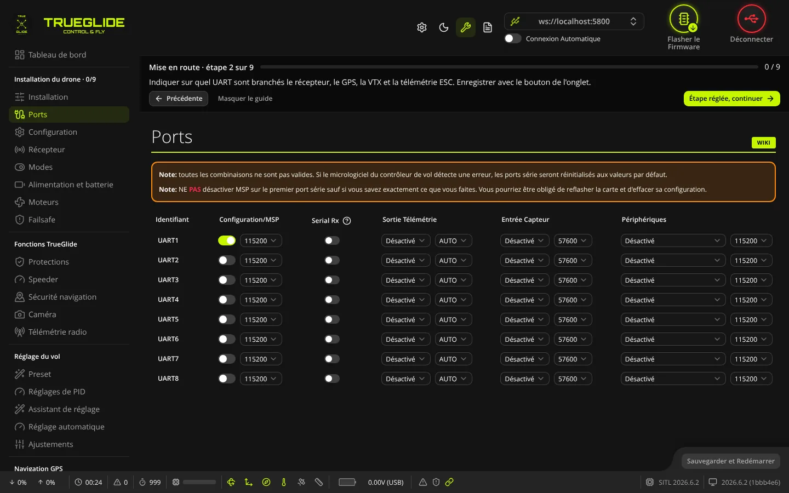
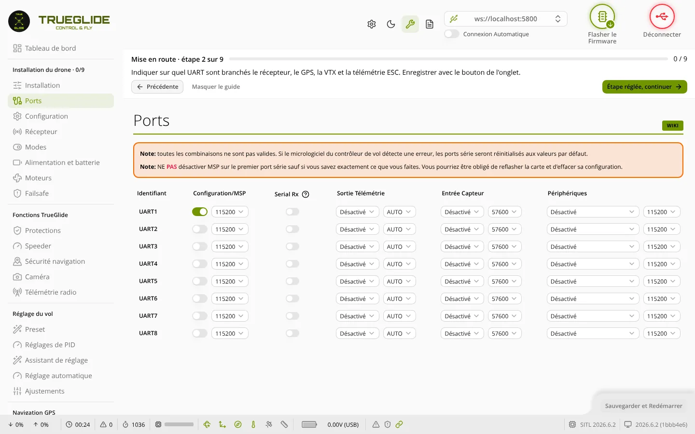

TRUE
TRUEPorts
L'onglet Ports (groupe « Installation du drone ») sert à dire à la carte ce qui est branché sur chaque port série (UART) : récepteur, GPS, émetteur vidéo, télémétrie des ESC, nacelle… Sans ce réglage, l'appareil branché n'est pas reconnu.


Les deux notes en haut
- Toutes les combinaisons ne sont pas valides. Si le firmware détecte une erreur, il remet les ports série à leurs valeurs par défaut.
- Ne désactivez pas MSP sur le premier port série sans savoir exactement ce que vous faites : le logiciel pourrait ne plus pouvoir se connecter, et il faudrait reflasher la carte.
Une troisième note peut apparaître si la table VTX n'est pas remplie : sans elle, la commande de l'émetteur vidéo ne marche pas. La table se règle dans l'onglet Émetteur vidéo.
Le tableau des ports
Une ligne par port. Le nom du port (Identifiant) est celui de la carte : UART1, UART2…, USB VCP (le port USB), SOFTSERIAL1… Sur un écran étroit, chaque port devient une carte avec les mêmes réglages.
- Configuration/MSP : interrupteur MSP (dialogue avec le logiciel, une caméra numérique, un module…) et sa vitesse, de 9600 à 1000000 bauds. Sur
USB VCP, l'interrupteur est grisé : il ne se change pas ici. - Serial Rx : le récepteur radio série (ExpressLRS/CRSF, SBUS, etc.) est branché sur ce port. Un seul port peut l'avoir : dès qu'un port l'a, l'interrupteur est grisé sur les autres.
- Sortie Télémétrie : protocole de télémétrie envoyé sur ce port (Frsky, HoTT, LTM, MAVLink, SmartPort, IBUS selon le firmware) et sa vitesse (AUTO ou une valeur en bauds).
- Entrée Capteur : GPS ou ESC (télémétrie série des ESC, fil de télémétrie), avec la vitesse du GPS (AUTO ou en bauds).
- Périphériques : un appareil commandé par la carte, avec sa vitesse (AUTO ou en bauds). Voir le tableau ci-dessous.
Une fonction que le firmware ne contient pas apparaît grisée dans la liste.
| Choix dans « Périphériques » | À quoi ça sert |
|---|---|
| Blackbox log | Enregistreur de journal de vol externe sur port série |
| VTX (TBS SmartAudio) | Commande d'un émetteur vidéo analogique en SmartAudio |
| VTX (IRC Tramp) | Commande d'un émetteur vidéo analogique en Tramp |
| VTX (MSP + Displayport) | Système vidéo numérique (DJI, Walksnail, HDZero) : commande et OSD par MSP. Ce choix active MSP sur le port. |
| Caméra (protocole RunCam) | Commande d'une caméra RunCam |
| OSD (Protocole FrSky) | OSD externe FrSky |
| Benewake LIDAR | Télémètre laser Benewake |
| Nacelle Caddx GM3 | Nacelle caméra Caddx GM3 (ajout TRUEGLIDE, 115 200 bauds). Le pilote de la nacelle n'est pas compilé dans les firmwares pour cartes F411 ni dans le modèle TRUENAV_LIGHT, mais le logiciel affiche quand même ce choix. |
Règles appliquées automatiquement
- Choisir une Sortie Télémétrie remet le Périphérique du même port sur « Désactivé », et inversement : un port ne peut pas avoir les deux.
- Choisir une télémétrie ou un périphérique qui ne peut pas partager le port avec MSP coupe MSP sur ce port.
- Choisir VTX (MSP + Displayport) active MSP sur le port.
Enregistrer
Le bouton Sauvegarder et Redémarrer, en bas à droite, s'active dès qu'un réglage change.
- Réglez chaque port utilisé (par exemple : récepteur ExpressLRS sur UART2 → Serial Rx ; GPS sur UART3 → Entrée Capteur = GPS).
- Cliquez sur Sauvegarder et Redémarrer. La carte enregistre et redémarre ; le logiciel se reconnecte.
À l'enregistrement, le logiciel règle aussi les fonctions de la carte qui vont avec les ports :
- récepteur série, Blackbox et capteur ESC : activés si un port les utilise, désactivés sinon ;
- télémétrie et GPS : activés si un port les utilise, jamais désactivés ici.
Une vitesse GPS laissée sur AUTO est envoyée à la carte comme 57600 ; une vitesse Blackbox sur AUTO est envoyée comme 115200.
Étapes suivantes : choisir le protocole du récepteur dans l'onglet Récepteur, et les fonctions dans l'onglet Configuration.